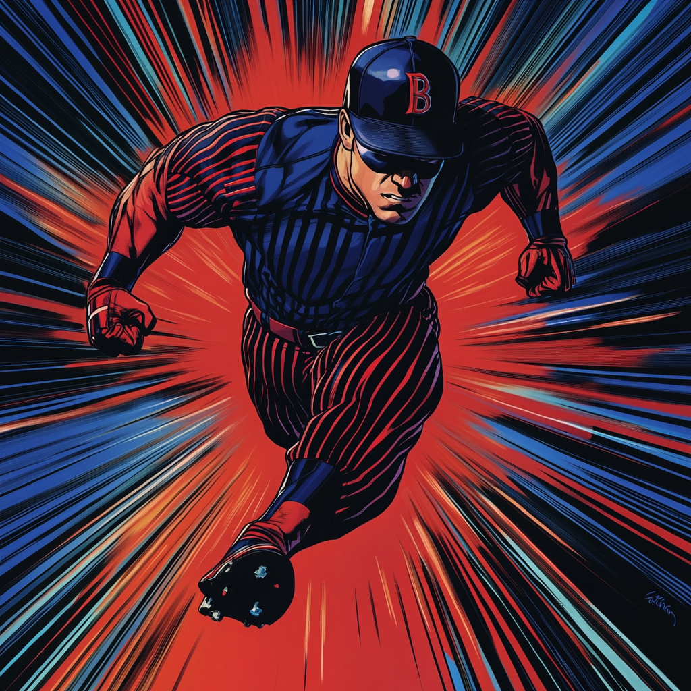

Fastball: From Minor League to Major Hero

Chapter 1: The Perfect Game
Johnny Ransom grew up in South Boston, where baseball ruled
summer afternoons. He showed talent early, pitching
no-hitters in Little League and becoming Southie High's star
pitcher. His fastball topped 145 km/h by senior year,
earning him a spot in the Red Sox minor league system.
Working his way through Single-A ball with the Lowell Spinners, Johnny developed a reputation for pinpoint accuracy. Scouts noted his uncanny ability to place pitches exactly where he wanted them, defying the usual learning curve for young pitchers.
Chapter 2: The Awakening
During a crucial game against the Portland Sea Dogs,
Johnny's mutant abilities emerged. His fastball clocked at
225 km/h, shattering records and protective equipment. More
significantly, he began perceiving the game in slow motion,
dodging line drives before they left the bat.
The team management tried to keep his abilities quiet, but videos of his impossible pitches went viral. The league suspended him pending investigation, citing concerns about "unfair advantages" and equipment safety.
Chapter 3: The Street League
Banned from professional baseball, Johnny found an outlet in
Boston's underground street baseball scene. These
unregulated games let him push his developing powers to
their limits. He learned to channel his speed into
quick-strike fighting moves, using baseball techniques as
the foundation for a unique combat style.
His reputation grew among both baseball purists and the mutant community. Exhibition games where he pitched to blindfolded batters drew crowds, with Johnny catching his own pitches after they passed home plate.
Chapter 4: The Call Up
Falcon discovered Johnny during a street game where he
single-handedly stopped an armed robbery without missing a
pitch. The display of speed, accuracy, and tactical thinking
caught the Avenger's attention.
The BAA offered Johnny a chance to transform his athletic skills into heroic abilities. Though hesitant to abandon his baseball dreams, he recognized the opportunity to use his gifts for a greater purpose.
Chapter 5: A New League
At the Academy, Johnny's baseball background provided
unexpected advantages. His muscle memory and spatial
awareness accelerated his combat training. He developed
techniques combining his speed powers with baseball-inspired
moves, like his signature "Fastball Special" where he
delivers rapid-fire punches while moving at super speed.
He forms the Academy's second-string team with DEX797 and Mistwalker, bringing athletic discipline to their tactical approach. His ability to catch bullets complements DEX797's ranged combat style, while his speed blast provides cover for Mistwalker's infiltration tactics.
Present Day
Johnny maintains his connection to baseball, volunteering as
a coach for youth leagues in South Boston. He works with
young mutant athletes, helping them balance their powers
with fair play and sportsmanship.
His quarters at BAA reflect his passion, decorated with memorabilia from his brief pro career. He still practices pitching daily, using his enhanced abilities to perfect new techniques that combine baseball fundamentals with heroic action.
The other students often find him in the Academy's training room, working on combining his speed powers with baseball-inspired combat moves. His athletic background brings a competitive edge to team exercises, while his understanding of teamwork helps coordinate the second-string team's operations.